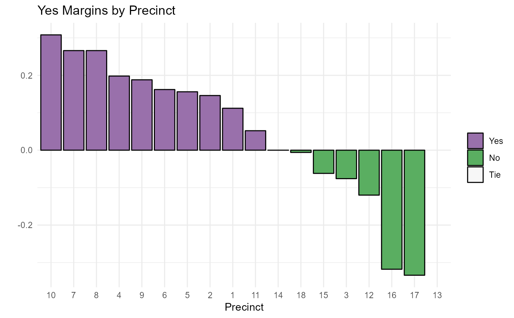

Create bar graphs of winner's margin per district by percent or raw votes
Source:R/bar_graph_of_winner_pct_margins.R
bargraph_of_margins.RdThis function expects data in the format generated by the wrangle_results() or wrangle_more_cols() functions.
Usage
bargraph_of_margins(
election_df,
district_col,
margin_col,
headline = "",
palette = c("#9970ab", "#5aae61", "#f7f7f7"),
brewer_palette = FALSE,
winner_col = Winner,
theme = theme_minimal(),
order_bars_desc = FALSE
)Arguments
- election_df
data frame of election results generated by wrangle_results() or wrangle_more_cols()
- district_col
name of the election district column NOT in quotation marks
- margin_col
name of the column with percent or vote margins NOT in quotation marks
- headline
character string for desired graph headline, defaults to ""
- palette
if brewer_palette is FALSE, character string of hex colors for winner, loser, and ties if brewer palette is TRUE, character string with RColorBrewer palette name or integer with palette number.
- brewer_palette
logical if TRUE use an RColorBrewer palette
- winner_col
name of column with the winner for each district NOT in quotation marks, defaults to Winner.
- theme
ggplot theme function. Defaults to theme_minimal() but allows for easy change of theme while still using function.
- order_bars_desc
logical should bars be ordered by descending value? Defaults to FALSE
Examples
my_file <- system.file("extdata", "FakeElectionResults.xlsx", package = "elections2")
my_election_results <- wrangle_results(my_file)
bargraph_of_margins(my_election_results, Precinct, Yes_Pct_Margin, order_bars_desc = TRUE, headline = "Yes Margins by Precinct")
#> Warning: Removed 1 rows containing missing values (position_stack).
